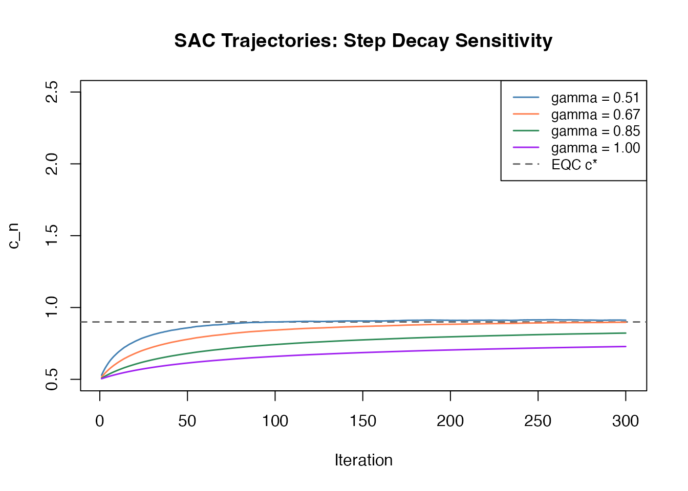
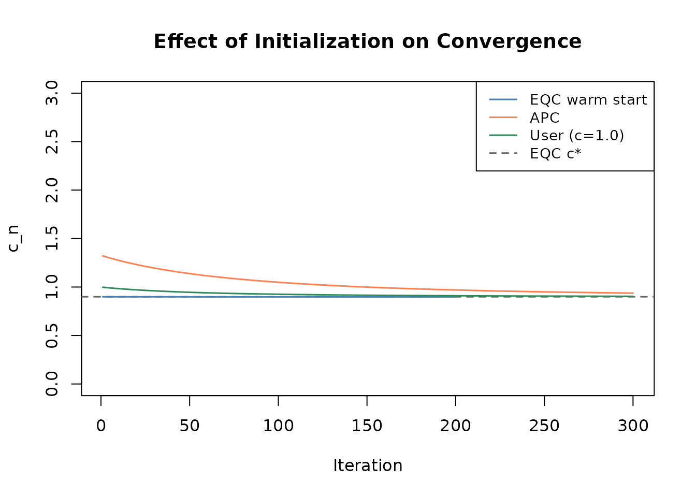
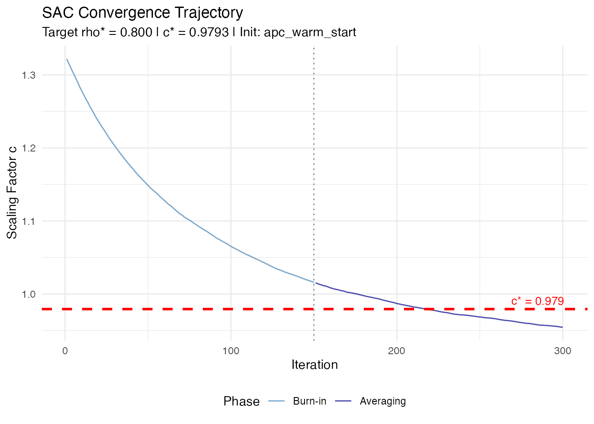
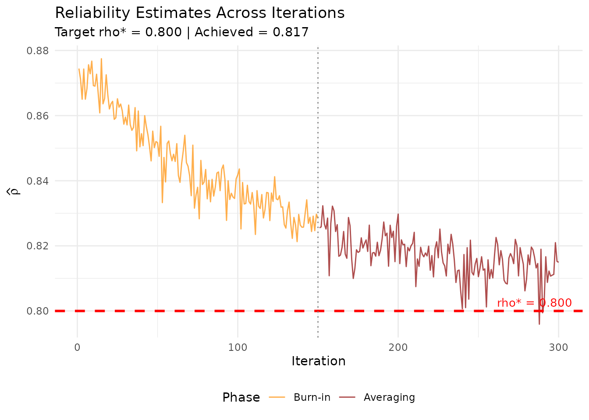

Algorithm 2: Stochastic Approximation Calibration (SAC)
JoonHo Lee (jlee296@ua.edu)
2026-08-22
Source:vignettes/algorithm-sac.Rmd
algorithm-sac.RmdOverview
Stochastic Approximation Calibration (SAC) is the secondary algorithm in IRTsimrel, designed to complement EQC (Algorithm 1). SAC uses the Robbins-Monro stochastic approximation framework to find the discrimination scaling factor c^* that achieves a target reliability.
Reading time: approximately 25 minutes.
Positioning: SAC serves both as the direct
MSEM-targeting algorithm and as a validation companion to EQC. When
validating EQC, set reliability_metric = "info" so both
algorithms target the same estimand. SAC also provides trajectory-based
convergence diagnostics that EQC lacks.
Prerequisites: Familiarity with
vignette("theory-reliability") for the mathematical
foundations. For applied workflows, see
vignette("introduction").
Key references: Lee (2026, arXiv:2512.16012v2), Section 2.5; Robbins and Monro (1951); Polyak and Juditsky (1992); Kushner and Yin (2003).
When to Use SAC
| Use Case | Recommendation |
|---|---|
| Routine simulation studies | Use EQC (faster, no tuning) |
| Independent validation of EQC | Use SAC with EQC warm start and
reliability_metric = "info"
|
| Direct MSEM targeting | Use SAC with
reliability_metric = "msem"
|
| Convergence diagnostics | SAC provides trajectory plots |
| Research on stochastic approximation | Use SAC |
The built-in Student-t
heavy_tail population is not compatible with population
MSEM targeting: its reciprocal-information expectation diverges. SAC
rejects that combination before iteration. Use the information metric or
define and label an explicitly truncated empirical design.
Item scope is part of the target
resample_items = FALSE defines a
fixed-form target. The same realized item bank is used
in preflight, every stochastic update, and independent theta evaluation.
resample_items = TRUE defines an
item-superpopulation target: fresh forms are drawn
during calibration and achieved_rho is the mean of
form-level reliabilities over an independent evaluation bank. It is not
the reliability obtained by pooling information across forms. Result
fields item_scope, estimand_signature, and
achieved_distribution make the distinction explicit.
For model = "3pl", lower asymptotes are supplied through
item_params$guessing_params and remain fixed within each
item form while the global scale multiplies discrimination only. The
result stores guessing_vec; coef() appends a
guessing column only for 3PL results. All-zero guessing
follows the 2PL numerical path exactly. The letter c below always denotes the global
discrimination scale, never the 3PL lower asymptote.
The Robbins-Monro Framework
The Stochastic Root-Finding Problem
After deterministic branch preflight, SAC uses stochastic approximation to solve:
g(c) = \mathbb{E}\!\left[\hat{\rho}(c)\right] - \rho^* = 0 \qquad \text{(1)}
where g(c) = \rho(c) - \rho^* is the reliability gap function. At each iteration n, it observes a noisy evaluation:
Y_n = \hat{\rho}_n(c_n) = \rho(c_n) + \varepsilon_n \qquad \text{(2)}
where \hat{\rho}_n is computed from fresh theta samples at each step (and fresh item forms only for the item-superpopulation scope), and \varepsilon_n is zero-mean noise with bounded variance: \mathbb{E}[\varepsilon_n \mid c_n] = 0 and \mathbb{E}[\varepsilon_n^2 \mid c_n] \leq \sigma^2_\varepsilon.
Branch preflight
Before the first update, SAC evaluates a common-random-number pilot
bank over the configured log-scale interval. It requires a resolved,
feasible, interior increasing crossing and narrows projection bounds to
that selected branch. For item-superpopulation calibration, two disjoint
form splits must select compatible roots with overlapping branch
intervals. Infeasible, decreasing, boundary-only, non-finite,
resolution-limited, or split-unstable cases stop with an
irtsimrel_sac_* classed error. The preflight bank is
isolated from the iteration and evaluation RNG streams.
The Robbins-Monro Update Rule
The iterative update proceeds as:
c_{n+1} = \Pi_{[c_L, c_U]}\!\left[c_n - a_n\,(\hat{\rho}_n(c_n) - \rho^*)\right] \qquad \text{(3)}
where \Pi_{[c_L, c_U]}[\cdot] denotes projection onto the effective interior of the selected branch (itself contained in the user bounds) and a_n is a decreasing step size sequence.
Intuition: When \hat{\rho}_n(c_n) > \rho^* (current reliability is too high), the update decreases c_n (reducing discrimination, hence reliability). When \hat{\rho}_n(c_n) < \rho^*, the update increases c_n.
Robbins-Monro Conditions
The step size sequence must satisfy:
\sum_{n=1}^{\infty} a_n = \infty \quad\text{and}\quad \sum_{n=1}^{\infty} a_n^2 < \infty \qquad \text{(4)}
First condition (\Sigma a_n = \infty): Ensures the algorithm can reach any point in the parameter space, regardless of the initial value. Without this, the total adjustment \sum a_n \cdot |\hat{\rho}_n - \rho^*| might be bounded, preventing convergence from a distant starting point.
Second condition (\Sigma a_n^2 < \infty): Controls the accumulated noise. The total noise variance is proportional to \sum a_n^2 \sigma^2_\varepsilon, which must be finite for convergence.
Step Size Analysis
The Step Size Sequence
SAC uses the parametric family:
a_n = \frac{a}{(n + A)^\gamma} \qquad \text{(5)}
with three parameters controlling different aspects of the learning dynamics.
Role of Each Parameter
a > 0 (scale constant): Controls the overall magnitude of updates. Larger a means more aggressive steps, leading to faster initial progress but potentially more oscillation.
In the package: step_params$a (default: 1).
A \geq 0 (stabilization
constant): Dampens early iterations where step sizes would
otherwise be very large (a_1 =
a/(1+A)^\gamma). When A > 0,
the effective step size starts smaller, providing stability during the
initial transient phase. This is particularly important when
c_init is far from c^*.
In the package, step_params$A defaults to 50. The
burn_in argument controls which iterations enter the
Polyak-Ruppert average; it does not set A
automatically.
\gamma \in (1/2, 1] (decay
exponent): Controls how quickly step sizes decrease. In the
package: step_params$gamma (default: 0.67).
- \gamma = 0.51: Slow decay, close to the boundary of the Robbins-Monro conditions. Maintains larger steps for longer, which can be beneficial when initial estimates are poor.
- \gamma = 2/3: A common compromise between convergence speed and stability.
- \gamma = 1: Fastest allowable decay. Reduces variance quickly but may under-correct if the initial value is far from the solution.
Robbins-Monro Conditions Verification
For the parametric family a_n = a/(n+A)^\gamma:
\sum_{n=1}^{\infty} \frac{a}{(n+A)^\gamma} = \infty \quad\iff\quad \gamma \leq 1
\sum_{n=1}^{\infty} \frac{a^2}{(n+A)^{2\gamma}} < \infty \quad\iff\quad 2\gamma > 1 \;\iff\; \gamma > 1/2
Therefore, any \gamma \in (1/2, 1] satisfies both conditions.
Step Size Sensitivity
The effect of different step size configurations can be observed through the convergence trajectory.
# Common setup
eqc_ref <- eqc_calibrate(
target_rho = 0.80, n_items = 25, model = "rasch",
item_source = "parametric", M = 5000L, seed = 42, verbose = FALSE
)
# Run SAC with different step decay values
decays <- c(0.51, 0.67, 0.85, 1.0)
colors <- c("steelblue", "coral", "seagreen", "purple")
oldpar <- par(mar = c(4.5, 4.5, 3, 1))
on.exit(par(oldpar))
plot(NULL, xlim = c(1, 300), ylim = c(0.5, 2.5),
xlab = "Iteration", ylab = "c_n",
main = "SAC Trajectories: Step Decay Sensitivity")
abline(h = eqc_ref$c_star, lty = 2, col = "gray40", lwd = 1.5)
for (k in seq_along(decays)) {
sac_k <- sac_calibrate(
target_rho = 0.80, n_items = 25, model = "rasch",
item_source = "parametric", reliability_metric = "info",
c_init = 0.5, # deliberately poor start
n_iter = 300L, M_per_iter = 1000L,
step_params = list(gamma = decays[k]),
seed = 42, verbose = FALSE
)
lines(seq_along(sac_k$trajectory), sac_k$trajectory,
col = colors[k], lwd = 1.5)
}
#> Warning: SAC may not have fully converged (status: not_converged; achieved gap:
#> -0.0748).
legend("topright",
legend = c(sprintf("gamma = %.2f", decays), "EQC c*"),
col = c(colors, "gray40"), lty = c(rep(1, 4), 2),
lwd = c(rep(1.5, 4), 1.5), cex = 0.85)
Effect of step decay parameter on SAC convergence trajectories.
Observations:
- Slower decay (\gamma = 0.51) maintains larger oscillations longer but eventually converges.
- Faster decay (\gamma = 1.0) converges quickly when starting near the solution, but risks under-correcting from a distant start.
- The default \gamma = 0.67 provides a good compromise between speed and stability.
Polyak-Ruppert Averaging
Why Averaging?
Under the usual locally linear stochastic-approximation conditions, a last iterate with step size n^{-\gamma} typically has mean-squared error of order n^{-\gamma}. Polyak and Juditsky (1992) showed that averaging can attain the optimal n^{-1} mean-squared-error order, equivalently an n^{-1/2} error scale, under the additional regularity conditions of the CLT.
The Averaging Formula
After discarding a burn-in period of B iterations, the Polyak-Ruppert average is:
\bar{c}_N = \frac{1}{N - B} \sum_{n=B+1}^{N} c_n \qquad \text{(6)}
where N is the total number of iterations and B is the burn-in count.
Convergence Rate Comparison
| Estimator | Error scale | MSE order | Notes |
|---|---|---|---|
| Final iterate c_N | typically O_p(N^{-\gamma/2}) | O(N^{-\gamma}) | Depends on step schedule and local conditions |
| Polyak-Ruppert \bar{c}_N | O_p(N^{-1/2}) | O(N^{-1}) | Optimal under the stated averaging CLT |
| Truncated average | O_p(N^{-1/2}) | O(N^{-1}) | Requires an admissible burn-in sequence |
With \gamma = 0.67 (the package default), this heuristic comparison gives a last-iterate error scale near n^{-0.335} versus the averaged n^{-0.5} scale. These are asymptotic orders under local assumptions, not finite-run guarantees for every IRT reliability curve.
Burn-In Selection
The burn-in period B should be large enough to exclude the initial transient (before the iterates have approached the solution) but small enough to include a sufficient number of post-burn-in samples.
In the package: burn_in parameter, specified as an
integer count (default: floor(n_iter / 2), i.e., 50% of
iterations).
Guidelines:
- With EQC warm start: the default
burn_in = floor(n_iter / 2)is sufficient (starting near the solution, transient is short). - With cold start or APC: the default 50% burn-in is appropriate; for
very long runs (N > 1000), a smaller
fraction (e.g.,
burn_in = floor(n_iter / 5)) can be used to include more post-burn-in samples.
Initialization Strategies
The initial value c_0 significantly affects SAC’s convergence speed. The package supports three initialization methods.
Strategy 1: EQC Warm Start (Recommended)
Pass an eqc_result object directly to
c_init:
An EQC object is accepted only for the same target, model, item
count, metric, and fixed-form scope. Leave item_source and
item_params unspecified so SAC can reuse the stored EQC
form exactly. Supplying an EQC-info result to initialize an MSEM run is
a contract mismatch; use a numeric scale when the initializer is only a
heuristic and label the designs separately.
eqc_for_init <- eqc_calibrate(
target_rho = 0.80, n_items = 25, model = "rasch",
item_source = "parametric", M = 5000L, seed = 42, verbose = FALSE
)
fixed_rasch_init <- list(
custom_params = list(
beta = eqc_for_init$beta_vec,
lambda = eqc_for_init$lambda_base
),
center_difficulties = FALSE
)
sac_warm <- sac_calibrate(
target_rho = 0.80, n_items = 25, model = "rasch",
reliability_metric = "info", resample_items = FALSE,
c_init = eqc_for_init, # EQC warm start
n_iter = 200L, M_per_iter = 1000L,
seed = 42, verbose = FALSE,
preflight_controls = list(M = 500L),
evaluation_controls = list(n_forms = 3L, M = 1000L)
)
cat(sprintf("EQC c*: %.4f\n", eqc_for_init$c_star))
#> EQC c*: 0.8995
cat(sprintf("SAC c* (warm start): %.4f\n", sac_warm$c_star))
#> SAC c* (warm start): 0.8982
cat(sprintf("Init method: %s\n", sac_warm$init_method))
#> Init method: eqc_warm_startAdvantages: Starting near the solution means the transient phase is short, burn-in can be minimal, and fewer iterations are needed.
Strategy 2: Analytic Pre-Calibration (APC)
When c_init = NULL, Rasch/2PL SAC first considers a
closed-form approximation derived under Gaussian Rasch assumptions. If
it lies outside the admissible preflight branch, the selected preflight
root is used instead. For 3PL, APC is not a valid approximation and the
selected preflight root is the default initializer.
Definition (APC Formula). Under the assumptions \theta \sim N(0, 1) and \beta_i \sim N(0, \sigma^2_\beta) with \lambda_i^{(0)} = 1 (Rasch), the approximate initial value is:
c_{\text{APC}} = \sqrt{\frac{\rho^*}{I \cdot \kappa(\sigma^2) \cdot (1 - \rho^*)}} \qquad \text{(7)}
where \sigma^2 = 1 + \sigma^2_\beta and the logistic-normal convolution constant is approximated by:
\kappa(\sigma^2) \approx \frac{0.25}{\sqrt{1 + \sigma^2 \pi^2 / 3}} \qquad \text{(8)}
Derivation sketch: Under the Gaussian Rasch model, the expected item information at a single item is \mathbb{E}[\lambda^2 p(1-p)] = c^2 \kappa(\sigma^2). With I items, the average test information is approximately I c^2 \kappa, so \tilde{\rho} \approx \sigma^2_\theta I c^2 \kappa / (\sigma^2_\theta I c^2 \kappa + 1). Setting this equal to \rho^* and solving for c yields Eq. (7).
# APC initialization (c_init = NULL triggers APC)
sac_apc <- sac_calibrate(
target_rho = 0.80, n_items = 25, model = "rasch",
item_source = "custom", item_params = fixed_rasch_init,
reliability_metric = "info", resample_items = FALSE,
c_init = NULL, # APC warm start
n_iter = 300L, M_per_iter = 1000L,
seed = 42, verbose = FALSE,
preflight_controls = list(M = 500L),
evaluation_controls = list(n_forms = 3L, M = 1000L)
)
cat(sprintf("SAC c* (APC start): %.4f\n", sac_apc$c_star))
#> SAC c* (APC start): 0.9618
cat(sprintf("Init method: %s\n", sac_apc$init_method))
#> Init method: apc_warm_start
# Compare APC init quality
c_apc <- compute_apc_init(target_rho = 0.80, n_items = 25)
cat(sprintf("APC initial value: %.4f (vs true c* ~ %.4f)\n",
c_apc, eqc_for_init$c_star))
#> APC initial value: 1.3274 (vs true c* ~ 0.8995)Strategy 3: User-Specified Value
A numeric value can be passed directly:
sac_user <- sac_calibrate(
target_rho = 0.80, n_items = 25, model = "rasch",
item_source = "custom", item_params = fixed_rasch_init,
reliability_metric = "info", resample_items = FALSE,
c_init = 1.0, # user-specified
n_iter = 300L, M_per_iter = 1000L,
seed = 42, verbose = FALSE,
preflight_controls = list(M = 500L),
evaluation_controls = list(n_forms = 3L, M = 1000L)
)
cat(sprintf("SAC c* (user init = 1.0): %.4f\n", sac_user$c_star))
#> SAC c* (user init = 1.0): 0.9086
cat(sprintf("Init method: %s\n", sac_user$init_method))
#> Init method: user_specifiedInitialization Comparison
oldpar <- par(mar = c(4.5, 4.5, 3, 1))
on.exit(par(oldpar))
plot(NULL, xlim = c(1, 300), ylim = c(0, 3),
xlab = "Iteration", ylab = "c_n",
main = "Effect of Initialization on Convergence")
abline(h = eqc_for_init$c_star, lty = 2, col = "gray40", lwd = 1.5)
lines(seq_along(sac_warm$trajectory), sac_warm$trajectory,
col = "steelblue", lwd = 1.5)
lines(seq_along(sac_apc$trajectory), sac_apc$trajectory,
col = "coral", lwd = 1.5)
lines(seq_along(sac_user$trajectory), sac_user$trajectory,
col = "seagreen", lwd = 1.5)
legend("topright",
legend = c("EQC warm start", "APC", "User (c=1.0)", "EQC c*"),
col = c("steelblue", "coral", "seagreen", "gray40"),
lty = c(1, 1, 1, 2), lwd = 1.5, cex = 0.9)
Convergence speed depends strongly on initialization quality.
Convergence Theory
Almost Sure Convergence (Theorem A.3)
Theorem (SAC Convergence; cf. Theorem A.3, Lee 2026). Suppose:
- The step sizes satisfy Eq. (4): \sum a_n = \infty, \sum a_n^2 < \infty.
- The reliability function \rho(c) is Lipschitz continuous on [c_L, c_U].
- g(c) = \rho(c) - \rho^* has one isolated root c^* in the interior of the selected projected preflight branch.
- The selected branch is globally stable over its projection interval: (c-c^*)g(c)>0 for every c\ne c^* in that interval, and g'(c^*)>0 locally.
- The noise \varepsilon_n satisfies \mathbb{E}[\varepsilon_n \mid c_n] = 0 and \mathbb{E}[\varepsilon_n^2 \mid c_n] \leq \sigma^2_\varepsilon < \infty.
Then the projected SAC iterates converge almost surely:
c_n \xrightarrow{\text{a.s.}} c^* \quad \text{as } n \to \infty \qquad \text{(9)}
This is a local, branch-conditional result. It does not claim a
globally unique root on the original user interval, and it does not
apply after a reported branch_lost event. The configured
preflight scan supplies numerical evidence for an increasing branch; it
does not prove the branch-wide drift condition assumed by this
theorem.
Proof sketch. The proof follows the classical Robbins-Monro theory, extended to the projected (constrained) setting by Kushner and Yin (2003, Chapter 5). The key steps are:
Lyapunov function: Define V(c) = (c - c^*)^2. Compute the conditional expectation of V(c_{n+1}) given c_n: \begin{aligned} \mathbb{E}[V(c_{n+1}) \mid c_n] &= V(c_n) - 2a_n(c_n - c^*) g(c_n) + a_n^2 \mathbb{E}[(\hat{\rho}_n - \rho^*)^2 \mid c_n] \end{aligned}
Drift condition: Since g(c)(c - c^*) > 0 for c \neq c^* (the reliability function is increasing, so g has the same sign as c - c^*), the drift term -2a_n(c_n - c^*)g(c_n) < 0 provides contraction toward c^*.
Noise control: The accumulated noise \sum a_n^2 \sigma^2_\varepsilon < \infty (by the step size conditions), so the noise does not prevent convergence.
Almost sure convergence: By the Robbins-Siegmund theorem (a supermartingale convergence result), V(c_n) \to V^* a.s. for some random variable V^*. The drift condition then forces V^* = 0, giving c_n \to c^* a.s.
Asymptotic Normality of Polyak-Ruppert Average
Theorem (Polyak-Ruppert CLT). Under the conditions of Theorem A.3 and additional smoothness assumptions, the Polyak-Ruppert average satisfies:
\sqrt{N - B}\,(\bar{c}_N - c^*) \xrightarrow{d} N\!\left(0,\, \frac{\sigma^2_\varepsilon}{g'(c^*)^2}\right) \qquad \text{(10)}
Under the additional regular stochastic-approximation conditions of Polyak–Juditsky theory, this covariance is asymptotically efficient for the local stochastic-approximation problem. It is not an unconditional Cramer–Rao claim for arbitrary IRT designs or noise processes.
Rate comparison: Under the same local conditions, \gamma=0.67 gives a typical last-iterate MSE order O(n^{-0.67}), whereas the Polyak–Ruppert average has O(n^{-1}) MSE and the asymptotic covariance shown above. This is the rate improvement; the reverse ordering reported in earlier documentation was incorrect.
Convergence Diagnostics
SAC provides automatic convergence assessment through several statistics.
# Run SAC with enough iterations
sac_diag <- sac_calibrate(
target_rho = 0.80, n_items = 25, model = "rasch",
reliability_metric = "info", resample_items = FALSE,
c_init = eqc_for_init, n_iter = 300L, M_per_iter = 1000L,
seed = 42, verbose = FALSE,
preflight_controls = list(M = 500L),
evaluation_controls = list(n_forms = 3L, M = 1000L)
)
conv <- sac_diag$convergence
cat("Convergence diagnostics:\n")
#> Convergence diagnostics:
cat(sprintf(" Converged: %s\n", conv$converged))
#> Converged: TRUE
cat(sprintf(" Status: %s\n", sac_diag$calibration_status))
#> Status: ok
cat(sprintf(" Status flags: %s\n", conv$status_flags))
#> Status flags: ok
cat(sprintf(" Mean (first half): %.4f\n", conv$mean_first_half))
#> Mean (first half): 0.8981
cat(sprintf(" Mean (second half): %.4f\n", conv$mean_second_half))
#> Mean (second half): 0.8981
cat(sprintf(" SD (post-burn-in): %.4f\n", conv$sd_post_burn))
#> SD (post-burn-in): 0.0001
cat(sprintf(" Hit lower bound: %s\n", conv$hit_lower_bound))
#> Hit lower bound: FALSE
cat(sprintf(" Hit upper bound: %s\n", conv$hit_upper_bound))
#> Hit upper bound: FALSEConvergence criterion: The split-mean trajectory diagnostic is:
\frac{|\bar{c}_{\text{first half}} - \bar{c}_{\text{second half}}|} {\max(|c^*|, \epsilon)} < 0.05
This mean-split diagnostic detects systematic drift, which would indicate that the iterates have not yet settled around the solution. The threshold is relative to the calibrated scale because the diagnostic is measured on the c scale; \epsilon is machine precision.
The public convergence$converged flag requires all of
the following:
- enough post-burn-in iterates and the split-mean diagnostic below 5%;
- independent achieved reliability within 0.05 of the target; and
- no
branch_lostcondition (including repeated branch-bound hits, an out-of-branch final average, or a nonpositive final branch slope).
Thus the split-mean statistic alone is not the convergence decision.
Post-burn-in SD: Should be small relative to c^*. Values above 0.1 suggest more iterations or better initialization.
iteration_trace is the authoritative update ledger. Each
row pairs the pre-update c_evaluated with
rho_update, then records c_raw,
c_updated, the reliability recomputed at that updated scale
(rho_updated), and any projection. The top-level
trajectory and rho_trajectory are the aligned
post-update scale/reliability sequence;
evaluation_trajectory (also exposed as
rho_scale_trajectory) and
rho_update_trajectory preserve the aligned pre-update pair.
This removes the one-step pairing ambiguity present in earlier
schemas.
Comparative Analysis: EQC vs SAC
When They Agree
When both algorithms use the same reliability metric and a verifiably
comparable design, and the SAC run has converged, their scales can be
compared. compare_eqc_sac() checks the estimand signature,
model, item count, item scope, fixed bank or normalized generator
specification, scale convention, and calibration status. If
comparability cannot be established, it retains the side-by-side numbers
but returns agreement = NA and explanatory
comparability_reasons; a percentage threshold is not
evidence across different estimands.
# Both targeting rho* = 0.80 with info metric
eqc_comp <- eqc_calibrate(
target_rho = 0.80, n_items = 25, model = "rasch",
item_source = "parametric", reliability_metric = "info",
M = 5000L, seed = 42, verbose = FALSE
)
sac_comp <- sac_calibrate(
target_rho = 0.80, n_items = 25, model = "rasch",
reliability_metric = "info", resample_items = FALSE,
c_init = eqc_comp, n_iter = 300L, M_per_iter = 1000L,
seed = 42, verbose = FALSE,
preflight_controls = list(M = 500L),
evaluation_controls = list(n_forms = 3L, M = 1000L)
)
comparison <- compare_eqc_sac(eqc_comp, sac_comp, verbose = FALSE)
cat(sprintf("EQC c*: %.4f\n", comparison$c_eqc))
#> EQC c*: 0.8995
cat(sprintf("SAC c*: %.4f\n", comparison$c_sac))
#> SAC c*: 0.8981
cat(sprintf("Diff: %.4f (%.2f%%)\n", comparison$diff_abs, comparison$diff_pct))
#> Diff: 0.0014 (0.15%)
cat(sprintf("Agree: %s\n", comparison$agreement))
#> Agree: TRUESources of Disagreement
When EQC and SAC disagree by more than 5%, investigate the following:
Different reliability metrics: For EQC/SAC agreement checks, ensure SAC uses
reliability_metric = "info". Direct SAC"msem"targeting is a different estimand, so disagreement with EQC-info is expected.SAC non-convergence: Check
sac_result$convergence$converged. IfFALSE, increasen_iteror use EQC warm start.Small M in EQC: Low quadrature size introduces Monte Carlo error. Increase
Min EQC.Different item scope/design: Fixed-form EQC and a resampled-form SAC target different item measures. Inspect
comparableandcomparability_reasonsrather than interpreting their raw percentage gap.Different root branch: Confirm the selected root direction and policy. A high-scale decreasing root is not interchangeable with the default lowest increasing root.
Extreme target: Very high (> 0.95) or very low (< 0.50) targets have flatter reliability curves, making both algorithms less precise.
What to Do When They Disagree
# Strategy 1: Increase SAC iterations
sac_longer <- sac_calibrate(
..., n_iter = 500L, seed = 42
)
# Strategy 2: Increase EQC quadrature
eqc_precise <- eqc_calibrate(
..., M = 50000L, seed = 42
)
# Strategy 3: Verify same metric
stopifnot(eqc_result$metric == sac_result$metric)
# Strategy 4: Run multiple SAC replications
sac_reps <- replicate(5, {
sac_calibrate(
..., seed = sample.int(10000, 1), verbose = FALSE
)$c_star
})
cat(sprintf("SAC c* across 5 reps: mean = %.4f, sd = %.4f\n",
mean(sac_reps), sd(sac_reps)))Diagnostic Examples
Trajectory Analysis
The plot() method provides visual diagnostics for SAC
convergence.
# Run SAC from APC start for a more interesting trajectory
sac_traj <- sac_calibrate(
target_rho = 0.80, n_items = 25, model = "rasch",
item_source = "parametric", reliability_metric = "info",
c_init = NULL, # APC start
n_iter = 300L, M_per_iter = 1000L,
seed = 42, verbose = FALSE
)
plot(sac_traj, type = "c")
SAC convergence trajectory showing the scaling factor iterations.
plot(sac_traj, type = "rho")
SAC reliability trajectory showing convergence to the target.
Replication Variability
SAC is inherently stochastic. Running multiple replications reveals the variability of the estimate.
n_reps <- 8
sac_reps <- numeric(n_reps)
for (r in seq_len(n_reps)) {
sac_r <- sac_calibrate(
target_rho = 0.80, n_items = 25, model = "rasch",
reliability_metric = "info", resample_items = FALSE,
c_init = eqc_for_init,
n_iter = 200L, M_per_iter = 1000L,
seed = r * 100, verbose = FALSE,
preflight_controls = list(M = 500L),
evaluation_controls = list(n_forms = 3L, M = 1000L)
)
sac_reps[r] <- sac_r$c_star
}
cat("SAC replication study (8 runs with EQC warm start):\n")
#> SAC replication study (8 runs with EQC warm start):
cat(sprintf(" Mean c*: %.4f\n", mean(sac_reps)))
#> Mean c*: 0.9031
cat(sprintf(" SD c*: %.4f\n", sd(sac_reps)))
#> SD c*: 0.0073
cat(sprintf(" Range: [%.4f, %.4f]\n", min(sac_reps), max(sac_reps)))
#> Range: [0.8920, 0.9119]
cat(sprintf(" EQC c*: %.4f\n", eqc_for_init$c_star))
#> EQC c*: 0.8995
cat(sprintf(" |Mean - EQC|: %.4f\n", abs(mean(sac_reps) - eqc_for_init$c_star)))
#> |Mean - EQC|: 0.0036Comparison Across Different Conditions
# Test across different target reliabilities
targets <- c(0.60, 0.70, 0.80, 0.90)
cat("EQC vs SAC across target reliabilities (25 Rasch items):\n")
#> EQC vs SAC across target reliabilities (25 Rasch items):
cat(sprintf(" %-8s %-10s %-10s %-10s %-8s\n",
"Target", "EQC c*", "SAC c*", "|Diff|", "Agree"))
#> Target EQC c* SAC c* |Diff| Agree
for (rho_t in targets) {
eqc_t <- eqc_calibrate(
target_rho = rho_t, n_items = 25, model = "rasch",
item_source = "parametric", reliability_metric = "info",
M = 5000L, seed = 42, verbose = FALSE
)
sac_t <- sac_calibrate(
target_rho = rho_t, n_items = 25, model = "rasch",
reliability_metric = "info", resample_items = FALSE,
c_init = eqc_t, n_iter = 200L, M_per_iter = 1000L,
seed = 42, verbose = FALSE,
preflight_controls = list(M = 500L),
evaluation_controls = list(n_forms = 3L, M = 1000L)
)
diff_abs <- abs(eqc_t$c_star - sac_t$c_star)
diff_pct <- 100 * diff_abs / eqc_t$c_star
agree <- diff_pct < 5
cat(sprintf(" %-8.2f %-10.4f %-10.4f %-10.4f %-8s\n",
rho_t, eqc_t$c_star, sac_t$c_star, diff_abs,
ifelse(agree, "YES", "NO")))
}
#> 0.60 0.5118 0.5111 0.0008 YES
#> 0.70 0.6548 0.6538 0.0010 YES
#> 0.80 0.8995 0.8982 0.0013 YES
#> 0.90 1.5328 1.5318 0.0011 YESEffect of M_per_iter
The per-iteration Monte Carlo sample size controls the noise level in each SAC step.
m_values <- c(200, 500, 1000, 2000)
cat("SAC sensitivity to M_per_iter (target = 0.80, 300 iter):\n")
#> SAC sensitivity to M_per_iter (target = 0.80, 300 iter):
cat(sprintf(" %-12s %-10s %-12s %-10s\n",
"M_per_iter", "c*", "Post-burn SD", "Converged"))
#> M_per_iter c* Post-burn SD Converged
for (m_val in m_values) {
sac_m <- sac_calibrate(
target_rho = 0.80, n_items = 25, model = "rasch",
reliability_metric = "info", resample_items = FALSE,
c_init = eqc_for_init, n_iter = 300L,
M_per_iter = as.integer(m_val),
seed = 42, verbose = FALSE,
preflight_controls = list(M = 500L),
evaluation_controls = list(n_forms = 3L, M = 1000L)
)
cat(sprintf(" %-12d %-10.4f %-12.4f %-10s\n",
m_val, sac_m$c_star,
sac_m$convergence$sd_post_burn,
sac_m$convergence$converged))
}
#> 200 0.8982 0.0004 TRUE
#> 500 0.8981 0.0002 TRUE
#> 1000 0.8981 0.0001 TRUE
#> 2000 0.8978 0.0001 TRUEIndependent achieved-reliability evaluation
Calibration and final evaluation use separate deterministic RNG
streams. For a fixed form, independent theta blocks quantify integration
variability and the concatenated evaluation nodes define
achieved_rho. For an item-superpopulation target, each
evaluation block has an independently drawn form and
achieved_rho is the arithmetic mean of the form
reliabilities; achieved_se and
achieved_distribution summarize their dispersion.
representative_achieved_rho and the stored representative
item bank remain available for inspection, but they are not substitutes
for the canonical superpopulation mean. Likewise,
predict(object) returns the stored aggregate, whereas
prediction at explicit new scales is labeled with its prediction
scope.
The result also records preflight, branch,
iteration_trace, calibration_design,
evaluation_design, and rng_provenance. These
fields should accompany a reproducibility report; c_star
alone does not identify the estimand or branch.
Deprecated Alias
The function was previously named spc_calibrate(). For
backward compatibility, spc_calibrate() still works but is
deprecated and will emit a warning. Use sac_calibrate() in
all new code.
Similarly, compare_eqc_spc() is deprecated in favor of
compare_eqc_sac().
Summary
SAC is a theoretically grounded validation companion to EQC:
| Aspect | Summary |
|---|---|
| Method | Robbins-Monro stochastic approximation |
| Convergence | Almost sure (Theorem A.3) |
| Optimal rate | O(n^{-1/2}) via Polyak-Ruppert averaging |
| Key advantage | Direct MSEM targeting and independent validation of EQC |
| Key disadvantage | Requires tuning (step size, iterations, burn-in) |
| Default metric | MSEM-based ("msem" / "bar");
use "info" for EQC validation |
| Item target | Fixed form or mean of form reliabilities, selected explicitly |
| Best practice | Inspect preflight/branch and independent achieved distribution; use a comparable EQC warm start only for fixed-form info calibration |
| Convergence check | sac_result$convergence$converged |
References
Lee, J.-H. (2026). Reliability-Targeted Simulation of Item Response Data: Solving the Inverse Design Problem. arXiv:2512.16012v2. https://doi.org/10.48550/arXiv.2512.16012
Robbins, H., & Monro, S. (1951). A stochastic approximation method. The Annals of Mathematical Statistics, 22(3), 400–407.
Polyak, B. T., & Juditsky, A. B. (1992). Acceleration of stochastic approximation by averaging. SIAM Journal on Control and Optimization, 30(4), 838–855.
Kushner, H. J., & Yin, G. G. (2003). Stochastic Approximation and Recursive Algorithms and Applications (2nd ed.). Springer.
Spall, J. C. (2003). Introduction to Stochastic Search and Optimization. Wiley.